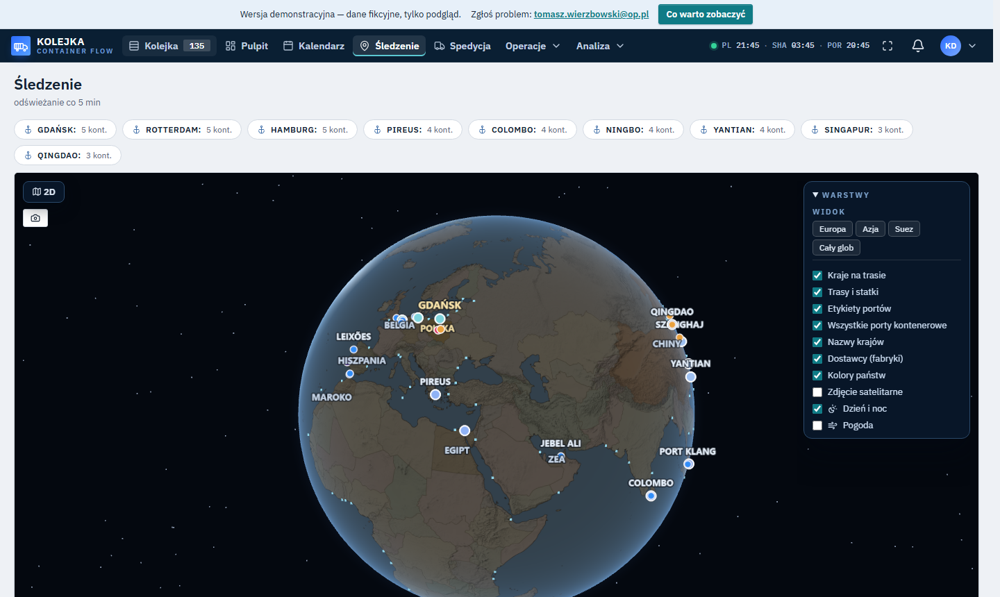

Awizacje, limity magazynów, odprawa celna i śledzenie statków w jednym miejscu. Dane w filmie są fikcyjne.
Konto tylko do odczytu, 150 fikcyjnych kontenerów, ekran powitalny prowadzi przez 4 miejsca.
